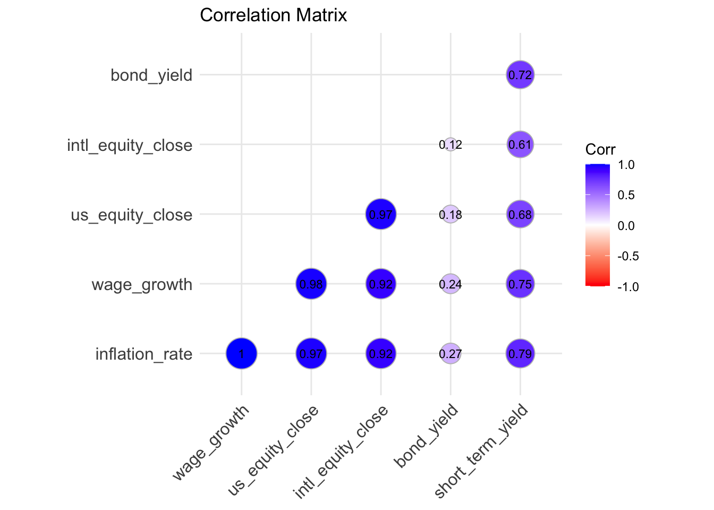
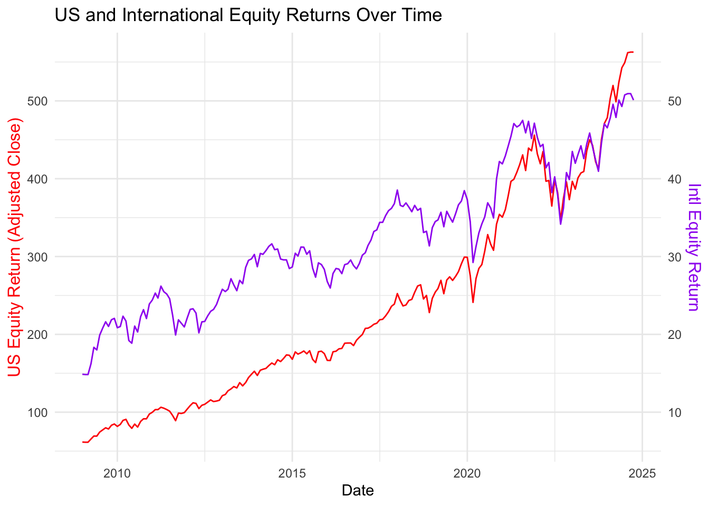
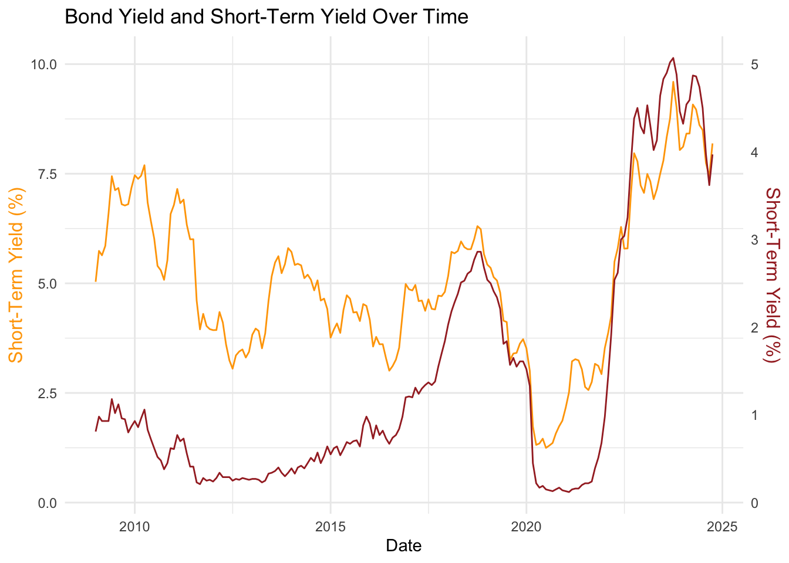

Show the code
library(httr2) # For API requests
library(dplyr) # For data manipulation
library(ggplot2) # For visualization
library(zoo) # For handling time-series data and filling missing valuesJuan Camilo Martinez Benavides
Selecting a retirement plan is one of the most critical financial decisions for new CUNY faculty, as it has permanent implications for their long-term financial security. Once chosen, the plan cannot be changed, making it essential to consider the potential risks and rewards. This project evaluates the Teachers Retirement System (TRS) and the Optional Retirement Plan (ORP) using historical economic data and Monte Carlo simulations. By modeling contributions, investment returns, and inflation-adjusted benefits, we aim to provide a personalized, data-driven recommendation tailored to individual financial goals and risk tolerance.
The primary goal of this project is to equip new CUNY faculty with an evidence-based recommendation for selecting the optimal retirement plan (TRS or ORP). This involves analyzing historical economic and financial data to assess how each plan performs under different economic conditions. We will utilize the following datasets:
By combining insights from these datasets, we will simulate potential retirement outcomes for each plan, identify risks such as running out of funds, and quantify the financial benefits of each option. This comprehensive approach ensures that our recommendation aligns with the diverse financial priorities of faculty members.
The following are the libraries we would use throughtout the project.
For this project, we will use data from two economic and financial data sources:
FRED is free to access, but AlphaVantage is a commercial service requiring a subscription. For this mini-project, the free tier of AlphaVantage will suffice.
We would proceed to collect the data from the sources mentioned above. and we would do it on a monthly basis for the last 15 years.
Tod do so, we would use their Apis:
# Define the base URL for the FRED API
fred_url <- "https://api.stlouisfed.org/fred/series/observations"
# Define the base URL for the AlphaVantage API
alphavantage_url <- "https://www.alphavantage.co/query"
# Read FRED API key from a file
fred_key <- readLines("fred_key.txt") # Ensure this file contains only your FRED API key
# Read AlphaVantage API key from a file
alphavantage_key <- readLines("alphavantage_key.txt") # Ensure this file contains only your AlphaVantage API key
# Montly basis for the last 15 years
Time_Montly =as.Date("2009-01-01")# Fetch Inflation Data from FRED (CPI for NYC Metro Area)
inflation_req <- request(fred_url) |>
req_url_query(
series_id = "CUUR0400SA0", # CPI for All Urban Consumers: NYC Metro Area
api_key = fred_key,
file_type = "json"
)
inflation_resp <- inflation_req |> req_perform()
inflation_data <- resp_body_json(inflation_resp)$observations
# Convert to DataFrame
inflation_df <- data.frame(
date = as.Date(sapply(inflation_data, function(x) x$date)),
inflation_rate = as.numeric(sapply(inflation_data, function(x) x$value))
)Warning in data.frame(date = as.Date(sapply(inflation_data, function(x)
x$date)), : NAs introduced by coercionTotal Rows in Inflation Data: 190 Rows with Missing Inflation Data: 0 date inflation_rate
185 2024-05-01 334.292
186 2024-06-01 333.662
187 2024-07-01 333.174
188 2024-08-01 333.442
189 2024-09-01 334.265
190 2024-10-01 334.558# Fetch Wage Growth Data from FRED
wage_growth_req <- request(fred_url) |>
req_url_query(
series_id = "AHETPI", # Average Hourly Earnings of Production and Nonsupervisory Employees
api_key = fred_key,
file_type = "json"
)
wage_growth_resp <- wage_growth_req |> req_perform()
wage_growth_data <- resp_body_json(wage_growth_resp)$observations
# Convert to a DataFrame
wage_growth_df <- data.frame(
date = as.Date(sapply(wage_growth_data, function(x) x$date)), # Parse date
wage_growth = as.numeric(sapply(wage_growth_data, function(x) x$value)) # Convert to numeric
)
# Filter data for the last 15–20 years
wage_growth_df <- wage_growth_df |> filter(date >= Time_Montly)
# Check the data
total_rows <- nrow(wage_growth_df)
missing_rows <- sum(is.na(wage_growth_df$wage_growth))
# Output results
cat("Total Rows in Wage Growth Data: ", total_rows, "\n")Total Rows in Wage Growth Data: 190 Rows with Missing Wage Growth Data: 0 date wage_growth
185 2024-05-01 29.95
186 2024-06-01 30.07
187 2024-07-01 30.16
188 2024-08-01 30.26
189 2024-09-01 30.36
190 2024-10-01 30.48# Fetch US Equity Market Data from AlphaVantage
us_equity_req <- request(alphavantage_url) |>
req_url_query(
`function` = "TIME_SERIES_MONTHLY_ADJUSTED",
symbol = "SPY", # S&P 500 ETF
apikey = alphavantage_key
)
us_equity_resp <- us_equity_req |> req_perform()
us_equity_data <- resp_body_json(us_equity_resp)$`Monthly Adjusted Time Series`
# Convert to DataFrame
us_equity_df <- data.frame(
date = as.Date(names(us_equity_data)), # Extract dates
us_equity_close = as.numeric(sapply(us_equity_data, function(x) x$`5. adjusted close`)) # Extract adjusted close prices
)
# Standardize dates to the first of each month
us_equity_df$date <- as.Date(format(us_equity_df$date, "%Y-%m-01"))
# Filter for the past 15 years
us_equity_df <- us_equity_df |> filter(date >= Time_Montly)
# Check Data Quality
cat("Total Rows in US Equity Data: ", nrow(us_equity_df), "\n")Total Rows in US Equity Data: 192 Rows with Missing US Equity Data: 0 date us_equity_close
187 2009-06-01 69.2692
188 2009-05-01 69.3159
189 2009-04-01 65.4879
190 2009-03-01 59.5698
191 2009-02-01 54.9799
192 2009-01-01 61.5986# Fetch International Equity Market Data from AlphaVantage
intl_req <- request(alphavantage_url) |>
req_url_query(
`function` = "TIME_SERIES_MONTHLY_ADJUSTED",
symbol = "VEA", # Vanguard FTSE Developed Markets ETF
apikey = alphavantage_key
)
intl_resp <- intl_req |> req_perform()
intl_data <- resp_body_json(intl_resp)$`Monthly Adjusted Time Series`
# Convert the fetched data into a data frame
intl_equity_df <- data.frame(
date = as.Date(names(intl_data)),
intl_equity_close = as.numeric(sapply(intl_data, function(x) x$`5. adjusted close`))
)
# Standardize dates to the first of each month
intl_equity_df$date <- as.Date(format(intl_equity_df$date, "%Y-%m-01"))
# Filter for the past 15 years
intl_equity_df <- intl_equity_df |> filter(date >= Time_Montly)
# Print information about the dataset
cat("Total Rows in International Equity Data: ", nrow(intl_equity_df), "\n")Total Rows in International Equity Data: 192 Rows with Missing International Equity Data: 0 date intl_equity_close
1 2024-12-01 50.5600
2 2024-11-01 50.3000
3 2024-10-01 50.1000
4 2024-09-01 52.8100
5 2024-08-01 52.2448
6 2024-07-01 50.7689# Fetch Bond Yield Data (Daily)
bond_req <- request(fred_url) |>
req_url_query(
series_id = "DGS10", # 10-Year Treasury Yield
api_key = fred_key,
file_type = "json"
)
bond_resp <- bond_req |> req_perform()
bond_data <- resp_body_json(bond_resp)$observations
# Convert to DataFrame
bond_df <- data.frame(
date = as.Date(sapply(bond_data, function(x) x$date)),
bond_yield = as.numeric(sapply(bond_data, function(x) x$value))
)Warning in data.frame(date = as.Date(sapply(bond_data, function(x) x$date)), :
NAs introduced by coercionTotal Rows in Bond Yield Data: 16415 Rows with Missing Bond Yield Data: 700 # Downsample to Monthly Averages
bond_df <- bond_df |>
mutate(month = format(date, "%Y-%m")) |># Extract year-month for grouping
group_by(month) |>
summarize(
bond_yield = mean(bond_yield, na.rm = TRUE), # Average yield for the month
.groups = "drop"
) |>
mutate(date = as.Date(paste0(month, "-01"))) |># Convert back to Date
select(date, bond_yield)
# Filter for the last 15 years
bond_df <- bond_df |> filter(date >= Time_Montly)
# Summary after Downsampling
cat("Total Rows in Bond Yield Data (Monthly): ", nrow(bond_df), "\n")Total Rows in Bond Yield Data (Monthly): 192 Rows with Missing Bond Yield Data: 0 # A tibble: 6 × 2
date bond_yield
<date> <dbl>
1 2024-07-01 4.25
2 2024-08-01 3.87
3 2024-09-01 3.72
4 2024-10-01 4.10
5 2024-11-01 4.36
6 2024-12-01 4.19# Fetch Short-Term Debt Data (2-Year Treasury Yield) - Attempt Monthly Query
short_term_req <- request(fred_url) |>
req_url_query(
series_id = "DGS2", # 2-Year Treasury Yield
frequency = "m", # Request monthly data directly
api_key = fred_key,
file_type = "json"
)
short_term_resp <- short_term_req |> req_perform()
short_term_data <- resp_body_json(short_term_resp)$observations
# Convert JSON to DataFrame
short_term_df <- data.frame(
date = as.Date(sapply(short_term_data, function(x) x$date), format = "%Y-%m-%d"),
short_term_yield = as.numeric(sapply(short_term_data, function(x) x$value))
)Warning in data.frame(date = as.Date(sapply(short_term_data, function(x)
x$date), : NAs introduced by coercionTotal Rows in Short-Term Yield Data (Monthly): 192 Rows with Missing Short-Term Yield Data: 1 date short_term_yield
187 2024-07-01 4.50
188 2024-08-01 3.97
189 2024-09-01 3.62
190 2024-10-01 3.97
191 2024-11-01 4.26
192 2024-12-01 NANow that we have collected the data, we can proceed to the next step, which is data preprocessing. We we gonna unify the data and deal with missing values by using bootstrapping.
# Load necessary libraries for analysis and visualization
library(dplyr)
library(ggplot2)
# Define a function to cap outliers
cap_outlier <- function(x, lower_bound, upper_bound) {
x[x < lower_bound] <- lower_bound
x[x > upper_bound] <- upper_bound
return(x)
}
# Standardize dates to the first of each month for all datasets
datasets <- list(inflation_df, wage_growth_df, us_equity_df, intl_equity_df, bond_df, short_term_df)
datasets <- lapply(datasets, function(df) {
df$date <- as.Date(format(df$date, "%Y-%m-01"))
return(df)
})
# Unpack datasets back
inflation_df <- datasets[[1]]
wage_growth_df <- datasets[[2]]
us_equity_df <- datasets[[3]]
intl_equity_df <- datasets[[4]]
bond_df <- datasets[[5]]
short_term_df <- datasets[[6]]
# Create master date sequence
start_date <- as.Date("2009-01-01")
end_date <- as.Date(format(Sys.Date(), "2024-10-01"))
date_seq <- data.frame(date = seq(from = start_date, to = end_date, by = "month"))
cat("Expected number of rows (months) over 15 years: ", nrow(date_seq), "\n")Expected number of rows (months) over 15 years: 190 # Perform left joins for all datasets
combined_data <- date_seq %>%
left_join(inflation_df, by = "date") %>%
left_join(wage_growth_df, by = "date") %>%
left_join(us_equity_df, by = "date") %>%
left_join(intl_equity_df, by = "date") %>%
left_join(bond_df, by = "date") %>%
left_join(short_term_df, by = "date")
# Check for missing data
cat("Total Rows in Combined Dataset: ", nrow(combined_data), "\n")Total Rows in Combined Dataset: 190 Missing Data Summary: date inflation_rate wage_growth us_equity_close intl_equity_close bond_yield
1 0 0 0 0 0 0
short_term_yield
1 0Applying bootstrap for missing data...combined_data <- combined_data %>%
mutate(
inflation_rate = replace(inflation_rate,
is.na(inflation_rate),
sample(na.omit(inflation_rate), size = sum(is.na(inflation_rate)), replace = TRUE)),
wage_growth = replace(wage_growth,
is.na(wage_growth),
sample(na.omit(wage_growth), size = sum(is.na(wage_growth)), replace = TRUE)),
us_equity_close = replace(us_equity_close,
is.na(us_equity_close),
sample(na.omit(us_equity_close), size = sum(is.na(us_equity_close)), replace = TRUE)),
intl_equity_close = replace(intl_equity_close,
is.na(intl_equity_close),
sample(na.omit(intl_equity_close), size = sum(is.na(intl_equity_close)), replace = TRUE)),
bond_yield = replace(bond_yield,
is.na(bond_yield),
sample(na.omit(bond_yield), size = sum(is.na(bond_yield)), replace = TRUE)),
short_term_yield = replace(short_term_yield,
is.na(short_term_yield),
sample(na.omit(short_term_yield), size = sum(is.na(short_term_yield)), replace = TRUE))
)
# Handle outliers by capping them
combined_data <- combined_data %>%
mutate(
inflation_rate = cap_outlier(inflation_rate,
lower_bound = quantile(inflation_rate, 0.01, na.rm = TRUE),
upper_bound = quantile(inflation_rate, 0.99, na.rm = TRUE)),
wage_growth = cap_outlier(wage_growth,
lower_bound = quantile(wage_growth, 0.01, na.rm = TRUE),
upper_bound = quantile(wage_growth, 0.99, na.rm = TRUE)),
us_equity_close = cap_outlier(us_equity_close,
lower_bound = quantile(us_equity_close, 0.01, na.rm = TRUE),
upper_bound = quantile(us_equity_close, 0.99, na.rm = TRUE)),
intl_equity_close = cap_outlier(intl_equity_close,
lower_bound = quantile(intl_equity_close, 0.01, na.rm = TRUE),
upper_bound = quantile(intl_equity_close, 0.99, na.rm = TRUE)),
bond_yield = cap_outlier(bond_yield,
lower_bound = quantile(bond_yield, 0.01, na.rm = TRUE),
upper_bound = quantile(bond_yield, 0.99, na.rm = TRUE)),
short_term_yield = cap_outlier(short_term_yield,
lower_bound = quantile(short_term_yield, 0.01, na.rm = TRUE),
upper_bound = quantile(short_term_yield, 0.99, na.rm = TRUE))
)
# Validate the final dataset
cat("After handling missing values and outliers:\n")After handling missing values and outliers: date inflation_rate wage_growth us_equity_close intl_equity_close bond_yield
1 0 0 0 0 0 0
short_term_yield
1 0 date inflation_rate wage_growth us_equity_close intl_equity_close
185 2024-05-01 334.268 29.950 524.0620 50.10910
186 2024-06-01 333.662 30.070 542.5534 49.28300
187 2024-07-01 333.174 30.160 549.1232 50.76890
188 2024-08-01 333.442 30.260 561.9538 50.93125
189 2024-09-01 334.265 30.271 562.6893 50.93125
190 2024-10-01 334.268 30.271 562.6893 50.10000
bond_yield short_term_yield
185 4.482273 4.86
186 4.305263 4.74
187 4.248636 4.50
188 3.870909 3.97
189 3.723500 3.62
190 4.095455 3.97 date inflation_rate wage_growth us_equity_close intl_equity_close
185 2024-05-01 334.268 29.950 524.0620 50.10910
186 2024-06-01 333.662 30.070 542.5534 49.28300
187 2024-07-01 333.174 30.160 549.1232 50.76890
188 2024-08-01 333.442 30.260 561.9538 50.93125
189 2024-09-01 334.265 30.271 562.6893 50.93125
190 2024-10-01 334.268 30.271 562.6893 50.10000
bond_yield short_term_yield
185 4.482273 4.86
186 4.305263 4.74
187 4.248636 4.50
188 3.870909 3.97
189 3.723500 3.62
190 4.095455 3.97Now that we have a clean dataset, we can perform some initial analysis to understand the trends and relationships between the variables.
We will visualize the data using line plots and we going to display them in pairs to compare the trends between the variables. so it would be inflation rate and wage growth, US equity and International equity, and Bond Yield and Short-Term Yield.
# Create plot for Inflation Rate and Wage Growth with corrected labels and separate y-axes
p1 <- ggplot(combined_data, aes(x = date)) +
# Inflation Rate
geom_line(aes(y = inflation_rate), color = "blue") +
scale_y_continuous(
name = "Inflation Rate Value (NYC)", # Corrected label for inflation rate
sec.axis = sec_axis(~ . * 0, name = " ") # Create empty secondary axis for separation
) +
# Wage Growth (scaled for visibility)
geom_line(aes(y = wage_growth * 10), color = "green") +
scale_y_continuous(
name = "Inflation Rate Value (NYC)", # Corrected label for wage growth
sec.axis = sec_axis(~ . / 10, name = "Wage Growth (Hourly Earnings in $)") # Corrected secondary label
) +
labs(title = "Inflation Rate and Wage Growth Over Time", x = "Date") +
theme_minimal() +
theme(
axis.title.y.left = element_text(color = "blue", size = 12),
axis.title.y.right = element_text(color = "green", size = 12)
)Scale for y is already present.
Adding another scale for y, which will replace the existing scale.# Create plot for US Equity and International Equity
p2 <- ggplot(combined_data, aes(x = date)) +
# US Equity Return
geom_line(aes(y = us_equity_close), color = "red") +
scale_y_continuous(
name = "US Equity Return (Adjusted Close)"
) +
# International Equity Return (scaled for visibility)
geom_line(aes(y = intl_equity_close * 10), color = "purple") +
scale_y_continuous(
name = "US Equity Return (Adjusted Close)",
sec.axis = sec_axis(~ . / 10, name = "Intl Equity Return")
) +
labs(title = "US and International Equity Returns Over Time", x = "Date") +
theme_minimal() +
theme(
axis.title.y.left = element_text(color = "red", size = 12),
axis.title.y.right = element_text(color = "purple", size = 12)
)Scale for y is already present.
Adding another scale for y, which will replace the existing scale.# Create plot for Bond Yield and Short-Term Yield
p3 <- ggplot(combined_data, aes(x = date)) +
# Bond Yield
geom_line(aes(y = bond_yield * 2), color = "orange") +
scale_y_continuous(
name = "Bond Yield (%)",
sec.axis = sec_axis(~ . / 2, name = "Bond Yield (%)")
) +
# Short-Term Yield
geom_line(aes(y = short_term_yield * 2), color = "brown") +
scale_y_continuous(
name = "Short-Term Yield (%)",
sec.axis = sec_axis(~ . / 2, name = "Short-Term Yield (%)")
) +
labs(title = "Bond Yield and Short-Term Yield Over Time", x = "Date") +
theme_minimal() +
theme(
axis.title.y.left = element_text(color = "orange", size = 12),
axis.title.y.right = element_text(color = "brown", size = 12)
)Scale for y is already present.
Adding another scale for y, which will replace the existing scale.


We will calculate the correlation matrix to understand the relationships between the variables. This will help us identify any significant correlations that can inform our analysis and decision-making process.
# Load the necessary library
library(ggcorrplot)
# Select only numeric columns
numeric_data <- combined_data %>%
select(where(is.numeric))
# Compute the correlation matrix
cor_matrix <- cor(numeric_data, use = "complete.obs")
# Visualize the correlation matrix using ggcorrplot
ggcorrplot(cor_matrix,
type = "lower", # Only show the lower triangle
lab = TRUE, # Show correlation coefficient labels
lab_size = 3, # Adjust label size
method = "circle", # Use circle shapes for correlation values
colors = c("red", "white", "blue"), # Color scale
title = "Correlation Matrix", # Plot title
ggtheme = theme_minimal(), # Minimalistic theme
tl.cex = 12, # Title label size
tl.col = "black" # Title text color
)In this analysis, we examine the relationships between several key economic factors, including inflation, wage growth, stock market returns (both US and international), bond yields, and short-term debt yields. Understanding how these factors are correlated can provide valuable insights for making informed financial decisions, particularly for retirement planning.
Wage Growth and Inflation: The close correlation between wage growth and inflation means that as prices rise, your income should likely increase, helping you maintain purchasing power in retirement.
Equity Market Performance: The strong correlation between US and international equity returns allows for diversification between these markets without sacrificing performance.
Bonds and Short-Term Yields: Understanding the relationship between bonds and short-term debt yields is crucial for managing fixed-income investments in a rising interest rate environment.
In this section, we compare the Teachers Retirement System (TRS) and the Optional Retirement Plan (ORP) for the first month of retirement, assuming:
The following code snippets will calculate the retirement benefits for both TRS and ORP based on the assumptions outlined above. We will compare the monthly benefits and accumulated funds for each plan to provide a comprehensive analysis of the retirement options.
# Assuming the dataset 'combined_data' already exists
# Calculate percentage growth for inflation_rate
combined_data$inflation_rate_growth <- c(NA, diff(combined_data$inflation_rate) / head(combined_data$inflation_rate, -1))
# Calculate percentage growth for wage_growth
combined_data$wage_growth_growth <- c(NA, diff(combined_data$wage_growth) / head(combined_data$wage_growth, -1))
# Calculate percentage growth for us_equity_close
combined_data$us_equity_growth <- c(NA, diff(combined_data$us_equity_close) / head(combined_data$us_equity_close, -1))
# Calculate percentage growth for intl_equity_close
combined_data$intl_equity_growth <- c(NA, diff(combined_data$intl_equity_close) / head(combined_data$intl_equity_close, -1))
# For bond_yield and short_term_yield, just divide by 100 to convert to decimals
combined_data$bond_yield <- combined_data$bond_yield / 100
combined_data$short_term_yield <- combined_data$short_term_yield / 100
# Create a new dataset with only the percentage growth columns
percentages <- combined_data[, c('date', 'inflation_rate_growth', 'wage_growth_growth',
'us_equity_growth', 'intl_equity_growth',
'bond_yield', 'short_term_yield')]
# Drop the first month (first row)
percentages <- percentages[-1, ]
# Show the results
print(percentages) date inflation_rate_growth wage_growth_growth us_equity_growth
2 2009-02-01 0.000000e+00 0.0000000000 -3.622939e-03
3 2009-03-01 1.326105e-04 0.0003568841 0.000000e+00
4 2009-04-01 2.544201e-03 0.0010810811 6.700512e-02
5 2009-05-01 3.015006e-03 0.0005399568 5.845355e-02
6 2009-06-01 5.938682e-03 0.0016189962 -6.737271e-04
7 2009-07-01 -1.732882e-03 0.0016163793 7.460603e-02
8 2009-08-01 1.822456e-03 0.0043033889 3.693857e-02
9 2009-09-01 1.864620e-03 0.0016068559 3.545818e-02
10 2009-10-01 6.945264e-04 0.0021390374 -1.922586e-02
11 2009-11-01 -3.261555e-03 0.0032017076 6.160715e-02
12 2009-12-01 -1.916005e-03 0.0021276596 1.907201e-02
13 2010-01-01 3.109796e-03 0.0021231423 -3.634293e-02
14 2010-02-01 8.636795e-04 0.0015889831 3.119505e-02
15 2010-03-01 2.861308e-03 0.0000000000 6.090499e-02
16 2010-04-01 1.779819e-03 0.0026441036 1.547038e-02
17 2010-05-01 9.719623e-04 0.0026371308 -7.945481e-02
18 2010-06-01 -1.219419e-03 0.0010520779 -5.174291e-02
19 2010-07-01 8.320258e-04 0.0005254861 6.830035e-02
20 2010-08-01 8.674790e-04 0.0036764706 -4.498046e-02
21 2010-09-01 -6.274743e-04 0.0000000000 8.955377e-02
22 2010-10-01 1.463520e-03 0.0047095761 3.820246e-02
23 2010-11-01 -1.668862e-04 0.0005208333 0.000000e+00
24 2010-12-01 1.849588e-03 0.0005205622 6.684401e-02
25 2011-01-01 4.809056e-03 0.0057232050 2.329955e-02
26 2011-02-01 5.745040e-03 -0.0010346611 3.473746e-02
27 2011-03-01 9.477300e-03 0.0000000000 1.074389e-04
28 2011-04-01 5.645354e-03 0.0025893320 2.896088e-02
29 2011-05-01 2.980201e-03 0.0025826446 -1.121447e-02
30 2011-06-01 -1.929843e-03 0.0000000000 -1.688645e-02
31 2011-07-01 -1.183821e-03 0.0030911901 -2.000474e-02
32 2011-08-01 1.830513e-03 0.0000000000 -5.497566e-02
33 2011-09-01 4.053071e-03 0.0010272214 -6.945000e-02
34 2011-10-01 2.094725e-04 0.0035915854 1.091476e-01
35 2011-11-01 -1.849953e-03 0.0000000000 -4.063205e-03
36 2011-12-01 -2.858754e-03 0.0005112474 1.043932e-02
37 2012-01-01 3.783146e-03 0.0010219724 4.637443e-02
38 2012-02-01 4.432702e-03 0.0000000000 4.340591e-02
39 2012-03-01 8.887150e-03 0.0025523226 3.215672e-02
40 2012-04-01 2.249622e-03 0.0020366599 -6.675855e-03
41 2012-05-01 2.115574e-03 -0.0005081301 -6.005606e-02
42 2012-06-01 -1.510386e-03 0.0020335536 4.052887e-02
43 2012-07-01 -3.472267e-03 0.0015220700 1.182942e-02
44 2012-08-01 4.778066e-03 0.0000000000 2.505305e-02
45 2012-09-01 4.643757e-03 0.0025329281 2.535671e-02
46 2012-10-01 3.772166e-03 0.0000000000 -1.819820e-02
47 2012-11-01 -7.490445e-03 0.0030318343 5.659034e-03
48 2012-12-01 -5.047040e-03 0.0030226700 8.998603e-03
49 2013-01-01 3.146158e-03 0.0015067805 5.119033e-02
50 2013-02-01 7.887987e-03 0.0025075226 1.275907e-02
51 2013-03-01 3.904602e-03 0.0005002501 3.797501e-02
52 2013-04-01 -9.765998e-05 0.0020000000 1.921221e-02
53 2013-05-01 2.085032e-03 0.0004990020 2.361012e-02
54 2013-06-01 1.050941e-03 0.0034912718 -1.336030e-02
55 2013-07-01 4.825867e-04 0.0009940358 5.167636e-02
56 2013-08-01 1.057794e-03 0.0019860973 -2.999192e-02
57 2013-09-01 2.345820e-03 0.0024777007 3.168081e-02
58 2013-10-01 -6.156545e-04 0.0009886307 4.630679e-02
59 2013-11-01 -3.573840e-03 0.0029629630 2.963831e-02
60 2013-12-01 -2.413689e-04 0.0019694732 2.589575e-02
61 2014-01-01 2.587930e-03 0.0019656020 -3.524821e-02
62 2014-02-01 3.831741e-03 0.0058852379 4.551566e-02
63 2014-03-01 6.220172e-03 -0.0004875670 8.310573e-03
64 2014-04-01 2.994663e-03 0.0004878049 6.951211e-03
65 2014-05-01 6.430144e-03 0.0014627011 2.320638e-02
66 2014-06-01 1.102134e-03 0.0024342746 2.063342e-02
67 2014-07-01 9.684789e-04 0.0009713453 -1.343749e-02
68 2014-08-01 -7.856109e-04 0.0024260068 3.946383e-02
69 2014-09-01 1.075892e-03 0.0004840271 -1.379126e-02
70 2014-10-01 -1.116071e-03 0.0014513788 2.355067e-02
71 2014-11-01 -5.917649e-03 0.0033816425 2.747214e-02
72 2014-12-01 -4.683207e-03 -0.0028887819 -2.560075e-03
73 2015-01-01 -3.249754e-03 0.0043457267 -2.962936e-02
74 2015-02-01 6.000386e-03 0.0019230769 5.620436e-02
75 2015-03-01 8.100172e-03 0.0033589251 -1.574480e-02
76 2015-04-01 2.532169e-03 0.0004782401 9.834278e-03
77 2015-05-01 7.944631e-03 0.0028680688 1.285576e-02
78 2015-06-01 4.299279e-04 0.0009532888 -2.009986e-02
79 2015-07-01 2.897697e-03 0.0014285714 2.214741e-02
80 2015-08-01 -1.236533e-03 0.0033285782 -6.134457e-02
81 2015-09-01 -1.961289e-03 -0.0004739336 -2.498985e-02
82 2015-10-01 3.439001e-04 0.0047415837 8.528627e-02
83 2015-11-01 -2.422843e-03 0.0009438414 3.654735e-03
84 2015-12-01 -1.292313e-03 0.0009429514 -1.717930e-02
85 2016-01-01 4.789799e-03 0.0037682525 -4.978633e-02
86 2016-02-01 9.035159e-04 0.0009385265 -8.261942e-04
87 2016-03-01 2.381332e-03 0.0028129395 6.724268e-02
88 2016-04-01 4.828772e-03 0.0032725573 3.941464e-03
89 2016-05-01 5.134049e-03 0.0004659832 1.701131e-02
90 2016-06-01 1.504912e-03 0.0023288309 3.497450e-03
91 2016-07-01 5.921975e-04 0.0027881041 3.647104e-02
92 2016-08-01 4.952189e-04 0.0009267841 1.197755e-03
93 2016-09-01 2.961794e-03 0.0013888889 7.784834e-05
94 2016-10-01 2.660151e-03 0.0036985668 -1.733712e-02
95 2016-11-01 -1.796740e-03 0.0000000000 3.683851e-02
96 2016-12-01 2.726019e-04 0.0023030861 2.028320e-02
97 2017-01-01 5.202071e-03 0.0022977941 1.789483e-02
98 2017-02-01 5.733332e-03 0.0013755158 3.929117e-02
99 2017-03-01 2.763110e-03 0.0018315018 1.258233e-03
100 2017-04-01 3.388035e-03 0.0027422303 9.926250e-03
101 2017-05-01 2.261570e-03 0.0009115770 1.411303e-02
102 2017-06-01 3.498703e-04 0.0027322404 6.373931e-03
103 2017-07-01 9.392107e-04 0.0027247956 2.055445e-02
104 2017-08-01 2.253561e-03 0.0013586957 2.917835e-03
105 2017-09-01 4.786863e-03 0.0031659882 2.014068e-02
106 2017-10-01 2.803075e-03 0.0000000000 2.356420e-02
107 2017-11-01 -3.771047e-04 0.0018034265 3.056581e-02
108 2017-12-01 8.595008e-04 0.0036003600 1.208662e-02
109 2018-01-01 5.016573e-03 0.0035874439 5.635903e-02
110 2018-02-01 5.211918e-03 0.0017873101 -3.636019e-02
111 2018-03-01 3.877132e-03 0.0035682426 -2.741576e-02
112 2018-04-01 3.996260e-03 0.0017777778 5.168510e-03
113 2018-05-01 4.590955e-03 0.0022182786 2.430905e-02
114 2018-06-01 1.869017e-03 0.0030987162 5.754926e-03
115 2018-07-01 9.062230e-04 0.0017652251 3.704661e-02
116 2018-08-01 1.606237e-03 0.0035242291 3.192012e-02
117 2018-09-01 2.685376e-03 0.0030728709 5.948180e-03
118 2018-10-01 4.111578e-03 0.0021881838 -6.910418e-02
119 2018-11-01 -2.017318e-03 0.0043668122 1.854904e-02
120 2018-12-01 -1.690143e-03 0.0047826087 -8.793628e-02
121 2019-01-01 1.564804e-03 0.0012981393 8.006564e-02
122 2019-02-01 2.224950e-03 0.0030250648 3.241594e-02
123 2019-03-01 4.338599e-03 0.0043084877 1.807872e-02
124 2019-04-01 8.048771e-03 0.0008580009 4.085267e-02
125 2019-05-01 5.038550e-03 0.0021431633 -6.377119e-02
126 2019-06-01 2.842587e-04 0.0038494440 6.959247e-02
127 2019-07-01 2.657248e-04 0.0034086067 1.511945e-02
128 2019-08-01 8.670659e-04 0.0029723992 -1.674358e-02
129 2019-09-01 3.089241e-03 0.0025402202 1.947915e-02
130 2019-10-01 5.225981e-03 0.0029560811 2.210466e-02
131 2019-11-01 -1.447771e-03 0.0037894737 3.619830e-02
132 2019-12-01 -1.991740e-03 -0.0004194631 2.903357e-02
133 2020-01-01 2.773457e-03 0.0033571129 -4.040608e-04
134 2020-02-01 3.921856e-03 0.0041823505 -7.916574e-02
135 2020-03-01 -1.519613e-03 0.0058309038 -1.246427e-01
136 2020-04-01 -3.948977e-03 0.0409937888 1.269836e-01
137 2020-05-01 5.459615e-04 -0.0059665871 4.764532e-02
138 2020-06-01 4.002754e-03 -0.0080032013 1.776075e-02
139 2020-07-01 5.259798e-03 -0.0040338846 5.889230e-02
140 2020-08-01 3.069700e-03 0.0052652896 6.979666e-02
141 2020-09-01 -7.596503e-05 -0.0004029009 -3.739838e-02
142 2020-10-01 1.642416e-03 0.0016122531 -2.493329e-02
143 2020-11-01 -3.611725e-06 0.0032193159 1.087768e-01
144 2020-12-01 -1.018510e-03 0.0092258323 3.706605e-02
145 2021-01-01 2.331946e-03 0.0003974563 -1.019065e-02
146 2021-02-01 5.280661e-03 0.0031783870 2.780552e-02
147 2021-03-01 6.899843e-03 0.0035643564 4.540528e-02
148 2021-04-01 1.026993e-02 0.0067087609 5.291030e-02
149 2021-05-01 8.063293e-03 0.0066640533 6.566029e-03
150 2021-06-01 8.642619e-03 0.0050623053 2.247274e-02
151 2021-07-01 5.550487e-03 0.0058117009 2.441247e-02
152 2021-08-01 1.828450e-03 0.0061633282 2.975980e-02
153 2021-09-01 2.272782e-03 0.0068912711 -4.657523e-02
154 2021-10-01 8.053516e-03 0.0060836502 7.016348e-02
155 2021-11-01 5.415870e-03 0.0041572184 -8.034782e-03
156 2021-12-01 3.783230e-03 0.0071509221 4.628837e-02
157 2022-01-01 8.790890e-03 0.0052316891 -5.274129e-02
158 2022-02-01 8.212116e-03 0.0026022305 -2.951712e-02
159 2022-03-01 1.302971e-02 0.0051909529 3.755569e-02
160 2022-04-01 6.762116e-03 0.0059018812 -8.776903e-02
161 2022-05-01 8.139478e-03 0.0044004400 2.257255e-03
162 2022-06-01 1.243682e-02 0.0051113545 -8.246930e-02
163 2022-07-01 1.451374e-03 0.0047221213 9.208753e-02
164 2022-08-01 1.974830e-04 0.0032537961 -4.080203e-02
165 2022-09-01 3.442533e-03 0.0039639640 -9.241634e-02
166 2022-10-01 6.997912e-03 0.0050251256 8.127562e-02
167 2022-11-01 -4.349210e-03 0.0046428571 5.559131e-02
168 2022-12-01 -4.178286e-03 0.0035549236 -5.757565e-02
169 2023-01-01 9.148154e-03 0.0028338647 6.288713e-02
170 2023-02-01 5.206676e-03 0.0038855528 -2.514253e-02
171 2023-03-01 4.966628e-03 0.0056298381 3.712489e-02
172 2023-04-01 4.589745e-03 0.0034989503 1.597508e-02
173 2023-05-01 4.152868e-03 0.0038354254 4.616008e-03
174 2023-06-01 2.852948e-03 0.0038207711 6.481415e-02
175 2023-07-01 1.285260e-03 0.0044982699 3.273340e-02
176 2023-08-01 4.214058e-03 0.0020668274 -1.625211e-02
177 2023-09-01 3.853063e-03 0.0030938467 -4.739330e-02
178 2023-10-01 6.626136e-04 0.0037697053 -2.170851e-02
179 2023-11-01 -4.299559e-03 0.0044383749 9.134376e-02
180 2023-12-01 -1.124735e-03 0.0030591434 4.566261e-02
181 2024-01-01 6.507492e-03 0.0044052863 1.592633e-02
182 2024-02-01 3.920098e-03 0.0020242915 5.218702e-02
183 2024-03-01 8.693170e-03 0.0030303030 3.272381e-02
184 2024-04-01 5.562880e-03 0.0013427325 -4.031963e-02
185 2024-05-01 6.525071e-04 0.0040227958 5.057962e-02
186 2024-06-01 -1.812827e-03 0.0040066778 3.528476e-02
187 2024-07-01 -1.462558e-03 0.0029930163 1.210904e-02
188 2024-08-01 8.043845e-04 0.0033156499 2.336561e-02
189 2024-09-01 2.468195e-03 0.0003635162 1.308794e-03
190 2024-10-01 8.885166e-06 0.0000000000 0.000000e+00
intl_equity_growth bond_yield short_term_yield
2 -0.0027563603 0.028700000 0.009800
3 0.0000000000 0.028195455 0.009300
4 0.0932066341 0.029271429 0.009300
5 0.1305881555 0.032930000 0.009300
6 -0.0182189106 0.037218182 0.011800
7 0.1057415577 0.035622727 0.010200
8 0.0449657820 0.035871429 0.011200
9 0.0393908649 0.034019048 0.009600
10 -0.0276972044 0.033876190 0.009500
11 0.0410806387 0.034026316 0.008000
12 0.0078699853 0.035900000 0.008700
13 -0.0543831169 0.037331579 0.009300
14 0.0074184190 0.036910526 0.008600
15 0.0629563694 0.037273913 0.009600
16 -0.0277329966 0.038468182 0.010600
17 -0.1152707091 0.034200000 0.008300
18 -0.0181323144 0.032040909 0.007200
19 0.1166246918 0.030114286 0.006200
20 -0.0358355373 0.026986364 0.005200
21 0.0965703704 0.026476190 0.004800
22 0.0405545600 0.025400000 0.003800
23 -0.0489958695 0.027630000 0.004500
24 0.0843783045 0.032909091 0.006200
25 0.0215750859 0.033940000 0.006100
26 0.0365564878 0.035763158 0.007700
27 -0.0250226275 0.034143478 0.007000
28 0.0619142209 0.034550000 0.007300
29 -0.0270048444 0.031685714 0.005600
30 -0.0121940215 0.030022727 0.004100
31 -0.0238947297 0.030030000 0.004100
32 -0.0858253138 0.023030435 0.002300
33 -0.1132985850 0.019752381 0.002100
34 0.0975759127 0.021520000 0.002800
35 -0.0208646814 0.020135000 0.002500
36 -0.0212485695 0.019780952 0.002600
37 0.0561526420 0.019665000 0.002400
38 0.0488427579 0.019675000 0.002800
39 0.0032742955 0.021727273 0.003400
40 -0.0238028780 0.020528571 0.002900
41 -0.1116800394 0.018031818 0.002900
42 0.0698078637 0.016223810 0.002900
43 0.0025319737 0.015266667 0.002500
44 0.0328602297 0.016782609 0.002700
45 0.0263521397 0.017231579 0.002600
46 0.0106447848 0.017461905 0.002800
47 0.0270815377 0.016540000 0.002700
48 0.0423541062 0.017190000 0.002600
49 0.0383184793 0.019147619 0.002700
50 -0.0114795473 0.019842105 0.002700
51 0.0118795494 0.019575000 0.002600
52 0.0521540280 0.017590909 0.002300
53 -0.0297390785 0.019281818 0.002500
54 -0.0276929853 0.023000000 0.003300
55 0.0519652940 0.025822727 0.003400
56 -0.0160206680 0.027372727 0.003600
57 0.0784990531 0.028095000 0.004000
58 0.0320887039 0.026159091 0.003400
59 0.0066086237 0.027184211 0.003000
60 0.0189550163 0.029019048 0.003400
61 -0.0520636116 0.028580952 0.003900
62 0.0594788283 0.027094737 0.003300
63 -0.0036551343 0.027233333 0.004000
64 0.0157506315 0.027052381 0.004200
65 0.0176519350 0.025590476 0.003900
66 0.0104266160 0.025985714 0.004500
67 -0.0237141529 0.025422727 0.005100
68 0.0026456568 0.024200000 0.004700
69 -0.0415534921 0.025342857 0.005700
70 -0.0035247457 0.023040909 0.004500
71 0.0000000000 0.023255556 0.005300
72 -0.0377257679 0.022072727 0.006400
73 0.0071268674 0.018815000 0.005500
74 0.0615977808 0.019752632 0.006200
75 -0.0121582445 0.020427273 0.006400
76 0.0386638673 0.019350000 0.005400
77 -0.0004837278 0.021975000 0.006100
78 -0.0290986129 0.023636364 0.006900
79 0.0146304910 0.023245455 0.006700
80 -0.0723351369 0.021671429 0.007000
81 -0.0408413064 0.021728571 0.007100
82 0.0673387377 0.020700000 0.006400
83 -0.0076224996 0.022631579 0.008800
84 -0.0213757534 0.022427273 0.009800
85 -0.0552804058 0.020852632 0.009000
86 -0.0308463805 0.017795000 0.007300
87 0.0719591601 0.018890909 0.008800
88 0.0231321906 0.018052381 0.007700
89 -0.0029965257 0.018061905 0.008200
90 -0.0204044960 0.016440909 0.007300
91 0.0415691014 0.015040000 0.006700
92 0.0040749233 0.015565217 0.007400
93 0.0164811732 0.016304762 0.007700
94 -0.0240603895 0.017645000 0.008400
95 -0.0150639481 0.021420000 0.009800
96 0.0245096659 0.024919048 0.012000
97 0.0366734810 0.024325000 0.012100
98 0.0105591441 0.024189474 0.012000
99 0.0305724546 0.024817391 0.013100
100 0.0221393407 0.022973684 0.012400
101 0.0341039995 0.023036364 0.013000
102 0.0063826969 0.021868182 0.013400
103 0.0288002441 0.023180000 0.013700
104 0.0002355370 0.022091304 0.013400
105 0.0251529176 0.022020000 0.013800
106 0.0177382397 0.023600000 0.015500
107 0.0086016891 0.023533333 0.017000
108 0.0164986049 0.024025000 0.018400
109 0.0474803094 0.025838095 0.020300
110 -0.0510752130 0.028589474 0.021800
111 -0.0039756430 0.028423810 0.022800
112 0.0126553437 0.028690476 0.023800
113 -0.0142809509 0.029777273 0.025100
114 -0.0166577286 0.029123810 0.025300
115 0.0228438463 0.028890476 0.026100
116 -0.0173217108 0.028891304 0.026400
117 0.0071175962 0.030042105 0.027700
118 -0.0859734382 0.031522727 0.028600
119 0.0050569626 0.031170000 0.028600
120 -0.0566730024 0.028326316 0.026800
121 0.0746636485 0.027138095 0.025400
122 0.0233239092 0.026763158 0.025000
123 0.0060213196 0.025709524 0.024100
124 0.0283818130 0.025323810 0.023400
125 -0.0521062469 0.023950000 0.022100
126 0.0585859900 0.020740000 0.018100
127 -0.0203803513 0.020590909 0.018400
128 -0.0188430751 0.016263636 0.015700
129 0.0315617900 0.016995000 0.016500
130 0.0321311383 0.017068182 0.015500
131 0.0134451076 0.018121053 0.016100
132 0.0356535085 0.018628571 0.016100
133 -0.0299593626 0.017576190 0.015200
134 -0.0765107291 0.015042105 0.013300
135 -0.1514575449 0.008700000 0.004500
136 0.0701857597 0.006576190 0.002200
137 0.0557741293 0.006740000 0.001700
138 0.0349218074 0.007286364 0.001900
139 0.0262962378 0.006567810 0.001500
140 0.0517465457 0.006567810 0.001400
141 -0.0178743700 0.006795238 0.001300
142 -0.0354529501 0.007871429 0.001500
143 0.1429678896 0.008700000 0.001700
144 0.0563980248 0.009336364 0.001400
145 -0.0072023066 0.010810526 0.001300
146 0.0243242405 0.012578947 0.001300
147 0.0276861430 0.016108696 0.001500
148 0.0305424325 0.016350000 0.001600
149 0.0357635444 0.016210000 0.001600
150 -0.0093298361 0.015190909 0.002000
151 0.0050464990 0.013185714 0.002200
152 0.0131330842 0.012831818 0.002200
153 -0.0337850783 0.013747619 0.002400
154 0.0322840719 0.015825000 0.003900
155 -0.0464303355 0.015595000 0.005100
156 0.0433695041 0.014650000 0.006800
157 -0.0385837764 0.017640000 0.009800
158 -0.0264811807 0.019342105 0.014400
159 0.0067595749 0.021278261 0.019100
160 -0.0678736598 0.027475000 0.025400
161 0.0165294247 0.028980952 0.026200
162 -0.0918798951 0.031433333 0.030000
163 0.0529403453 0.028960000 0.030400
164 -0.0581936292 0.028978261 0.032500
165 -0.0986197197 0.035190476 0.038600
166 0.0607805484 0.039835000 0.043800
167 0.1254881074 0.038910000 0.045000
168 -0.0218123685 0.036161905 0.042900
169 0.0903029483 0.035315000 0.042100
170 -0.0347470642 0.037468421 0.045300
171 0.0264208375 0.036630435 0.043000
172 0.0263440623 0.034600000 0.040200
173 -0.0373159637 0.035736364 0.041300
174 0.0444176712 0.037480952 0.046400
175 0.0313978485 0.038995000 0.048300
176 -0.0394702131 0.041678261 0.049000
177 -0.0378259123 0.043790000 0.049132
178 -0.0338518445 0.045068429 0.049132
179 0.0880685425 0.045028571 0.048800
180 0.0558316971 0.040200000 0.044600
181 -0.0108564202 0.040580952 0.043200
182 0.0274389392 0.042075000 0.045400
183 0.0365792704 0.042085000 0.045900
184 -0.0340839853 0.045068429 0.048700
185 0.0466346676 0.044822727 0.048600
186 -0.0164860275 0.043052632 0.047400
187 0.0301503561 0.042486364 0.045000
188 0.0031978042 0.038709091 0.039700
189 0.0000000000 0.037235000 0.036200
190 -0.0163210017 0.040954545 0.039700# Assuming the percentages data exists and starting salary is $50,000
starting_salary <- 50000
n_months <- nrow(percentages) # Total number of months
# Create a vector to store the salary for each month
salary <- numeric(n_months)
salary[1] <- starting_salary
# Calculate salary growth over the months based on wage_growth_growth
for (i in 2:n_months) {
salary[i] <- salary[i - 1] * (1 + percentages$wage_growth_growth[i - 1])
}
# Employee contribution percentages based on salary brackets
employee_contribution <- numeric(n_months)
for (i in 1:n_months) {
if (salary[i] <= 45000) {
employee_contribution[i] <- 0.03
} else if (salary[i] <= 55000) {
employee_contribution[i] <- 0.035
} else if (salary[i] <= 75000) {
employee_contribution[i] <- 0.045
} else if (salary[i] <= 100000) {
employee_contribution[i] <- 0.0575
} else {
employee_contribution[i] <- 0.06
}
}
# Employer contributions: 8% for the first 7 years, 10% thereafter
employer_contribution <- numeric(n_months)
years_of_service <- floor((1:n_months) / 12) + 1 # Convert months to years
for (i in 1:n_months) {
if (years_of_service[i] <= 7) {
employer_contribution[i] <- 0.08
} else {
employer_contribution[i] <- 0.10
}
}
# Calculate monthly contributions for ORP (employee + employer)
monthly_contribution_orp <- salary * (employee_contribution + employer_contribution)
# Calculate compounded ORP balance
orp_balance <- numeric(n_months)
orp_balance[1] <- 0 # Assume no balance at the start
for (i in 2:n_months) {
# Growth is applied according to equity, international equity, and bond growth
equity_growth <- percentages$us_equity_growth[i - 1] * 0.47 + percentages$intl_equity_growth[i - 1] * 0.32 + percentages$bond_yield[i - 1] * 0.21
orp_balance[i] <- orp_balance[i - 1] * (1 + equity_growth) + monthly_contribution_orp[i]
}
# Final ORP balance at retirement (end of the last month)
final_orp_balance <- orp_balance[n_months]
# Calculate 4% annual withdrawal rate for the first month of retirement
orp_monthly_withdrawal <- final_orp_balance * 0.04 / 12
# Calculate TRS pension benefit: Final Average Salary (FAS) based on last 3 years
fas <- mean(salary[(n_months - 35):n_months]) # Last 36 months (3 years)
years_served <- n_months / 12 # Years of service
trs_benefit <- fas * 0.025 * years_served # Assuming 2.5% per year
# Monthly TRS benefit
trs_monthly_benefit <- trs_benefit / 12
# Output results
cat("TRS Monthly Benefit at Retirement (First Month): $", round(trs_monthly_benefit, 2), "\n")TRS Monthly Benefit at Retirement (First Month): $ 2531.95 ORP Monthly Withdrawal (First Month): $ 17529.87 To modify the simulation and project an employee’s pension benefit (TRS) or withdrawal amount (ORP) from retirement until death, we need to consider several key factors:
Estimated Death Age: We’ll assume a reasonable life expectancy for the employee. Cost-of-Living Adjustments (COLA) for TRS: We’ll apply annual inflation adjustments to the TRS benefit, which increase by 50% of the CPI each year, capped at 3%. ORP Market Returns: We’ll assume long-run average returns for the ORP portfolio, based on historical equity, bond, and international equity returns. Projecting Retirement Income: We will simulate the monthly income over time, considering the employee’s longevity and both TRS and ORP scenarios.
# Parameters
death_age <- 85 # Assumed age of death
start_age <- 50 # Starting age of the employee
current_age <- start_age + 1 # Employee starts at 51 after the first year
# Time to simulate (from retirement to death)
years_of_retirement <- death_age - (start_age + (n_months / 12)) # Years from retirement to death
total_months_in_retirement <- years_of_retirement * 12 # Total months in retirement
# Initialize variables
monthly_income_trs <- numeric(total_months_in_retirement)
monthly_income_orp <- numeric(total_months_in_retirement)
orp_balance_retirement <- final_orp_balance # Starting ORP balance at retirement
trs_benefit_retirement <- trs_monthly_benefit # Starting TRS benefit at retirement
# TRS: Apply COLA (cost of living adjustment) each year, capped at 3%
for (i in 1:total_months_in_retirement) {
if (i %% 12 == 0) { # At the start of each year
inflation_rate <- percentages$inflation_rate_growth[i %% n_months] # Using inflation data from percentages
inflation_adjustment <- min(0.03, inflation_rate * 0.5) # Apply COLA, capped at 3%
trs_benefit_retirement <- trs_benefit_retirement * (1 + inflation_adjustment)
}
monthly_income_trs[i] <- trs_benefit_retirement # Monthly TRS income
}
# ORP: Apply 4% annual withdrawal rate and simulate market returns
for (i in 1:total_months_in_retirement) {
# Apply monthly growth from historical returns (average returns assumed for simplicity)
average_market_growth <- mean(c(percentages$us_equity_growth, percentages$intl_equity_growth, percentages$bond_yield), na.rm = TRUE)
orp_balance_retirement <- orp_balance_retirement * (1 + average_market_growth / 12) # Monthly compounded growth
orp_monthly_withdrawal <- orp_balance_retirement * 0.04 / 12 # 4% annual withdrawal rate
orp_balance_retirement <- orp_balance_retirement - orp_monthly_withdrawal # Subtract withdrawal
monthly_income_orp[i] <- orp_monthly_withdrawal # Monthly ORP income
# Stop the ORP withdrawals if the balance runs out
if (orp_balance_retirement <= 0) {
monthly_income_orp[i] <- 0
break
}
}
# Calculate the maximum and minimum income gap between TRS and ORP
income_gap <- monthly_income_trs - monthly_income_orp
max_gap <- max(income_gap, na.rm = TRUE)
min_gap <- min(income_gap, na.rm = TRUE)
# Calculate average monthly income for both TRS and ORP
avg_income_trs <- mean(monthly_income_trs, na.rm = TRUE)
avg_income_orp <- mean(monthly_income_orp, na.rm = TRUE)
# Determine if ORP funds run out before death or if there are funds left for heirs
if (orp_balance_retirement <= 0) {
run_out_of_funds <- TRUE
remaining_funds <- 0
} else {
run_out_of_funds <- FALSE
remaining_funds <- orp_balance_retirement
}
# Output results
cat("Average Monthly Income - TRS: $", round(avg_income_trs, 2), "\n")Average Monthly Income - TRS: $ 2573.32 Average Monthly Income - ORP: $ 13956.3 Maximum Monthly Income Gap (TRS vs ORP): $ -8261.52 Minimum Monthly Income Gap (TRS vs ORP): $ -15020.06 TRS Monthly Benefit at Retirement (First Month): $ 2531.95 ORP Monthly Withdrawal at Retirement (First Month): $ 10886.85 ORP funds last until death. Remaining funds for heirs: $ 3255167